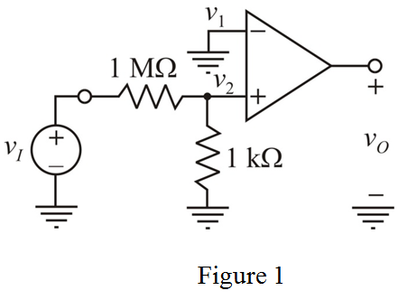

Refer to the op-amp circuit shown in Figure P2.2 in the textbook.
Redraw the circuit diagram by indicating with node voltages.

Consider the following data:
The value of the output voltage is,
The value of the input voltage is,
Write the output voltage formula for open loop configuration.
From the Figure 1, it is clear that, the inverting terminal of the op-amp is connected to the ground. Hence, .
Substitute  for
for  in the output voltage equation.
in the output voltage equation.
Calculate the voltage at the non-inverting terminal,  , of the op-amp by using the voltage divider formula.
, of the op-amp by using the voltage divider formula.
Substitute  value in the output voltage equation
value in the output voltage equation  .
.
Rearrange the equation to get the open-loop voltage gain.
Therefore, the open-loop voltage gain,  of the op-amp is .
of the op-amp is .